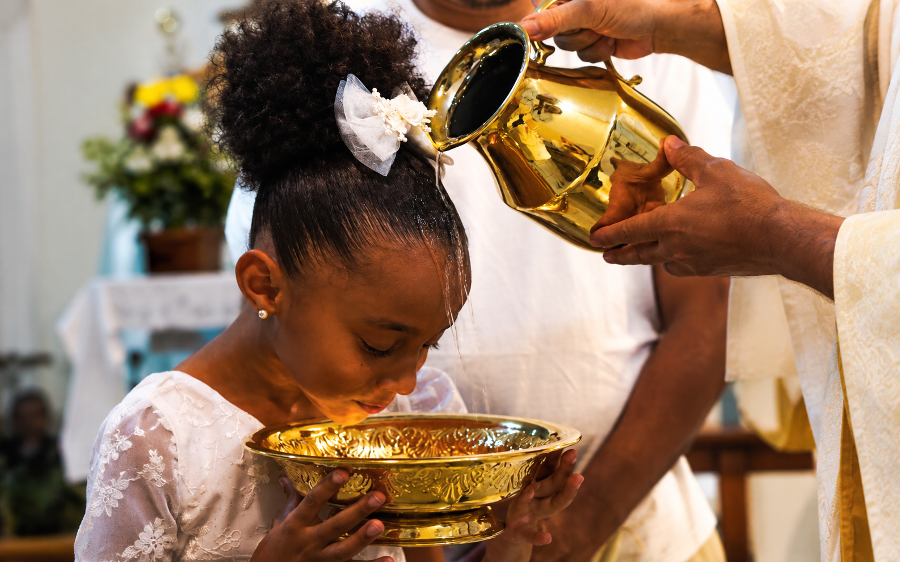
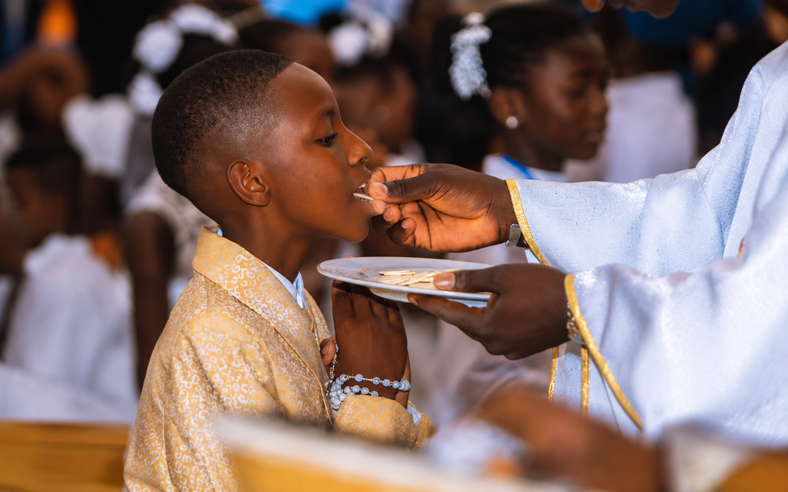
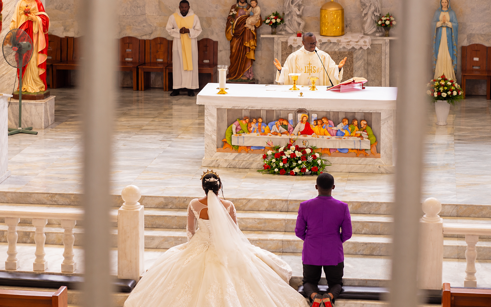
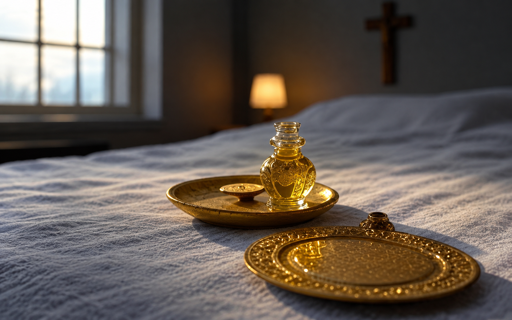

Worship & Sacraments
Come and encounter Christ in the celebration of the Eucharist and the life of the sacraments.
Mass and Worship
The Eucharist is at the heart of our Catholic life. Please contact the parish office to confirm current schedules before your visit.
Sunday Mass Schedule
8:00 AM — General Joint Parish Mass (Combined Liturgy)
6:30 AM — Holy Mass in English
8:00 AM — Holy Mass in Yoruba
Daily Mass & Eucharistic Worship
6:15 AM — Daily Eucharistic Celebration (Monday to Saturday)
Sacrament of Reconciliation (Confession)
Receive God's mercy and grace. Available by arrangement or before scheduled services.
Our parish priest is available for spiritual direction and questions.
Schedules may change; contact the parish office to confirm.
Come and Receive God’s Mercy
In Reconciliation, we bring our lives before God and receive the grace of forgiveness.
Contact the parish office to ask about current availability or to arrange a time.
Plan for Reconciliation
- Ask the parish office for current availability.
- Prepare in prayer and reflect on your intentions.
- Need help? We are glad to answer questions.
- Times and arrangements should be confirmed with the parish office.
Grace Through Every Season
The sacraments accompany us throughout life with the grace of Christ. Contact the parish office for guidance on preparation and participation.

BaptismBaptism
Baptism welcomes us into the life of Christ and the Church. Contact the parish office about preparation and scheduling.

EucharistHoly Eucharist
In the Eucharist, we encounter Christ and are united as his holy people. Contact us about First Holy Communion preparation.
Confirmation
Confirmation strengthens and seals the gifts of the Holy Spirit. Contact the parish office about youth or adult preparation.

Holy MatrimonyMarriage
Couples preparing for holy marriage should contact the parish office at least 6 months prior for guidance and preparation.

AnointingAnointing of the Sick
This sacrament offers healing prayer, peace, and grace in times of serious illness or surgery. Contact us for pastoral care visits.
Holy Orders
Through Holy Orders, men are ordained to serve the Church in holy ministry. Contact the parish priest for discernment guidance.
The Gift of the Eucharist
In the Eucharist, Christ gathers and nourishes his people with his ultimate grace.
Bring your joys, needs, and intentions to the altar of the Lord. Contact the parish office for guidance on mass intentions or personal prayer requests.